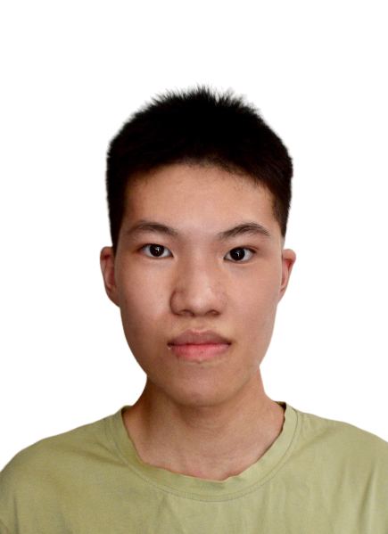
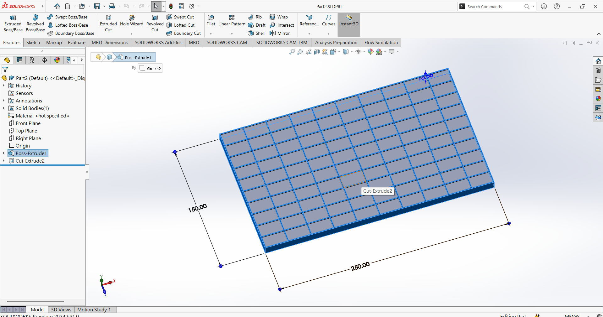
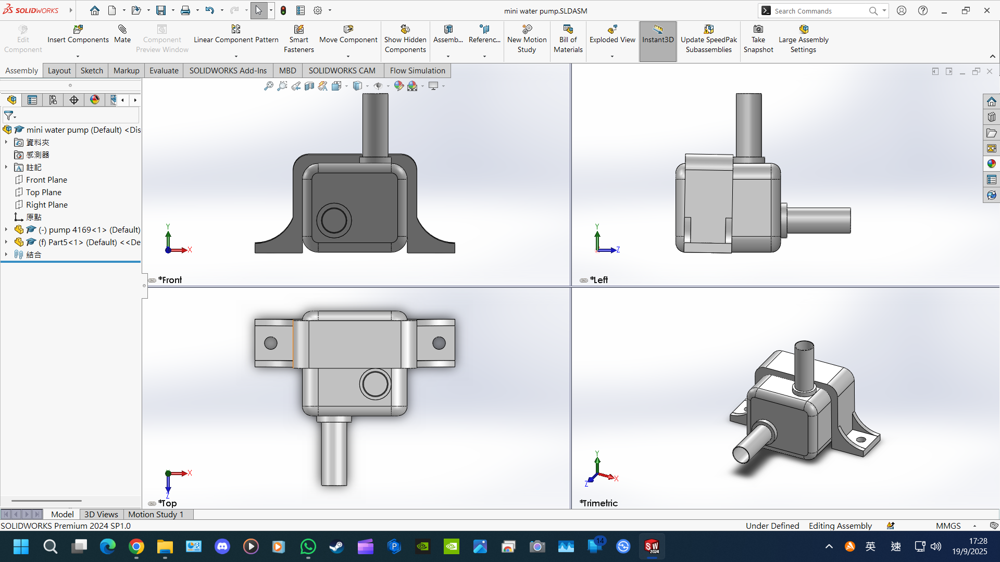
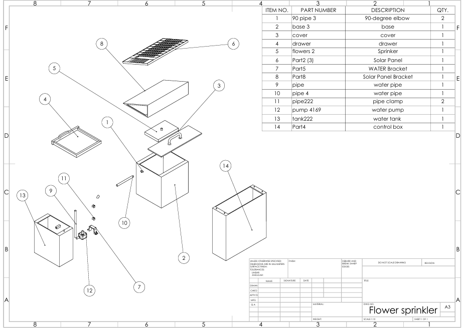

Mechanical Engineering Higher Diploma Graduate | SolidWorks Expert | Detail-oriented
I am a graduate with a Higher Diploma in Mechanical Engineering from IVE (Lee Wai Lee), under the Vocational Training Council in Hong Kong. I am seeking an entry-level position in the mechanical engineering industry (especially elevator/escalator maintenance) where I can apply my technical knowledge and enthusiasm for problem-solving. I am reliable, eager to learn, and passionate about sustainability, with personal interests in hiking, DIY products, and recycling. My goal is to contribute creative ideas and a strong work ethic to a dynamic engineering team, while continuously developing my skills and making a positive impact in the industry.


